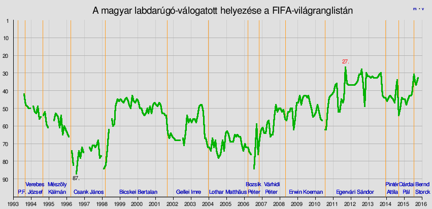
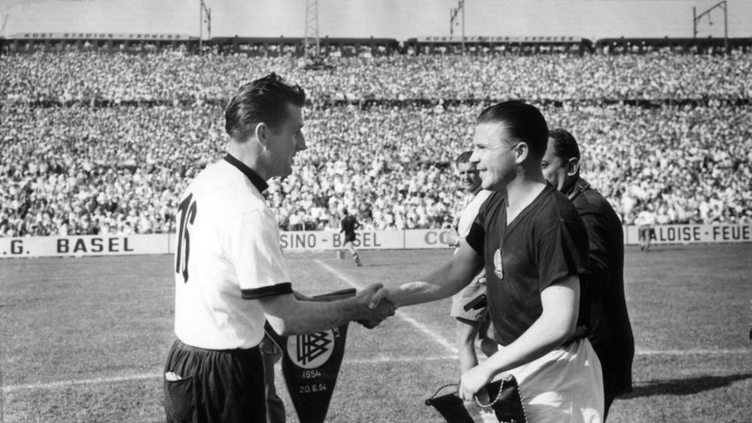
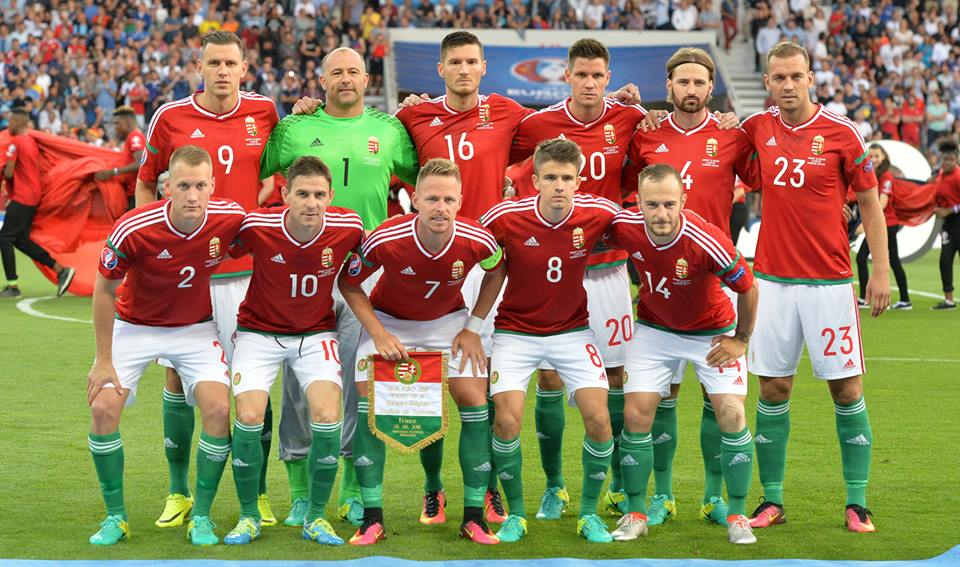

A magyar labdarúgó-válogatott Magyarország nemzeti csapata, amelyet a Magyar Labdarúgó-szövetség irányít. A válogatott legnagyobb sikereit 1938 és 1968 között aratta: az 1938-as és 1954-es labdarúgó-világbajnokságon ezüstérmesként, az 1964-es labdarúgó-Európa-bajnokságon pedig bronzérmesként zárt. Emellett aranyérmet szerzett az 1952-es, az 1964-es és az 1968-as olimpián. A magyar válogatott tartja a leghosszabb idejű veretlenségi sorozatot a világon: 1950. június 4-e és 1954. június 30-a között 30 mérkőzésen nem szenvedett vereséget. A 20. században sikert sikerre halmozó csapat 1986 után 30 éven át nem tudta kvalifikáltatni magát nemzetközi sporteseményre. Ez az átok 2016-ban tört meg, amikor a csapat kijutott a Labdarúgó-Európa-bajnokságra. A 2016-os labdarúgó-Európa-bajnokságon első helyen jutott tovább a csoportjából, de a nyolcaddöntőben Belgiumtól 4–0-s vereséget szenvedett. A nemzeti együttes az elmúlt időszak legjobb FIFA-világranglista helyezését 2016. március 7-én érte el, amikor a 18. helyen állt.
Diagramm a Magyar válogatottotról:
Puskás Ferenc és Fritz Walter:
Magyar Válogatott az EB-n:
